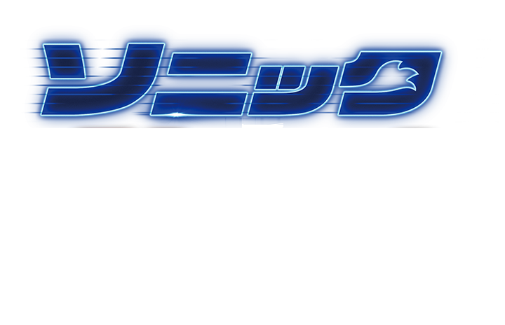

この度シャドウの日本語吹替えを担当することになりました声優の森川智之です。
超人気作品の「ソニック」シリーズに出演するだけでも光栄なことなのに、あのダークヒーロー、シャドウを演じられるとは感無量であります！
字幕版ではシャドウの声をキアヌ・リーブスさんが担当！
いつも彼の日本語吹替えをさせていただいていますが、
同じキャラクターの声優を務めるというのも楽しかったです！
「キアヌシャドウ」「森川シャドウ」と字幕版吹替版ともに楽しんでいただければと思います。
シャドウ役 森川智之
今回は日本が舞台ということで、「ここ知ってるー！」という場面がたくさん出てきて、アフレコのときからワクワクしながら誇らしい気持ちで観させていただきました。
ソニックたちと心の距離を縮めファミリーの一員となったナックルズの活躍にもご注目ください！
またまた大画面でソニックの世界を浴びられるなんて本当に嬉しいです。
今回のお話でしっかりチームソニックになれたんだなと、テイルスを演じていて胸がいっぱいになりました。
舞台に東京が出てくるので、収録終わりにスタジオを出た時ものすごい風に吹き飛ばされそうになりながら「あ、今ソニックが通ったかも！」とワクワクしてしまいました。
知っている街を駆けぬけるソニックに会いにきてください。お待ちしています。
拝啓
ジム・キャリー様
大変ご無沙汰しております。
あなたは前作公開のあと引退をほのめかしましたね。
あなたの吹替えが生きがいの一つである私は愕然としました。しかしあなた帰って来てくれました！
最高です！しかもおじいちゃん役まで！ジム・キャリー節全開じゃないですか！
あなた同士の掛け合いの吹替えは大変でしたが、声優冥利に尽きる楽しい時間でした。
引退などと言わず、これからも唯一無二の演技で我々を楽しませて下さい。
少なくとも僕が声優をやめるまでは。
あなたの大ファン
山寺宏一
敬具
遂に遂に3作品目！
ソニックの人気の程が伺える展開で本当に嬉しいです。
今作もこれまでに負けず劣らず「ソニック愛」に溢れた作品となっていて、エンディングのラストまでそれを感じ続けることが出来ました。
BGMや演出、細かい所まで本当に沢山あるので是非発見して頂きたいですね！
そしてロボトニック！これまで以上に主張が強い！やはり良いキャラクターだなぁと思わされます！
ソニックファンの方期待してください！
そうで無い方も是非ご覧になって頂き、ソニックワールドをお楽しみ下さい！
これまで登場してきたキャラクター達は勿論、遂にシャドウが登場です。
ソニックファミリーもとても賑やかになって来ましたが、より絆が深くなり信頼し合いながら闘える事が嬉しいです。
今回トムとマディは変わった方法で作戦に参加しますが、一体どのような姿が見られるのか、楽しみにして頂けたら幸いです。
今作もソニック達とロボトニック達の熱いバトルを存分にお楽しみ下さい！
チーム・ソニックin Tokyo！そしてもちろん…？チーム・ロボトニックも日本襲来？！
映画『ソニック』シリーズを応援してくださっている皆様。今作の展開もジジジッと痺れるくらい、最高です。
悩む暇があったら観るんだ！ヤギのミルク片手に…進化したエージェント・ストーンも
劇場へのお越しをお待ちしております！家族と友達と恋人と、ソニックの世界を堪能して下さい。
1ファンとして応援し続けてきたソニックシリーズ、
もちろん映画も毎回楽しみにしてきました。
今回吹き替えで参加できると聞き、お声がけ頂けただけでとっても嬉しかったです。
映画版のソニック、キュートな動きが多くて愛おしいんですよね〜！
ソニックはクールな憧れの存在だった生涯ですが、
映画版の彼には可愛い弟みたいな印象を受けるといいますか…、…のちに、香盤表を見てびっくり。マリアってあのマリア…？
私の最推しハリネズミでこの間新作ゲームも出て大好評で今年1年シャドウイヤーでゲームショウでもでかいシャドウが展示されたり着ぐるみが作られたり大活躍で内容も重厚なミニアニメができたり漫画連載があったりトレーラーを見るに映画でも活躍が確定しているソニックによく似た黒き究極生命体、シャドウ・ザ・ヘッジホッグの推し、少女:マリアですか？？？？
推しの推しの声帯になる世界線がこの日本に存在してしまう…？
事の重大さに震えましたが、シャドウに興奮する私も
頭の中で大慌てしている私も厳重に！しっかり！2度と！起きないように封じ込めて、
全霊で取り組みましたのでご安心ください！
映画のシャドウも魅力的です！もちろんキュートなソニックも健在！
クールで愛おしい彼らの大大大活躍を是非劇場でご覧ください！


久々のソニックとの再会は、やはり興奮しました。
彼の顔を見ると、不思議と、その間の空いていた時間が嘘のようにエネルギーが湧き上がってきました！
自分の中でソニックが、“青い炎”のように、静かに、その時に向け燃え続けていた事が嬉しくなりました。
これまでの2作を通して、それだけの熱い時間を過ごさせて貰いました。
今回も収録を通して、ソニックへの愛は益々大きくなるばかりでした。
新たなソニックの顔を皆さんにも沢山見つけてもらいたいです！お楽しみに！